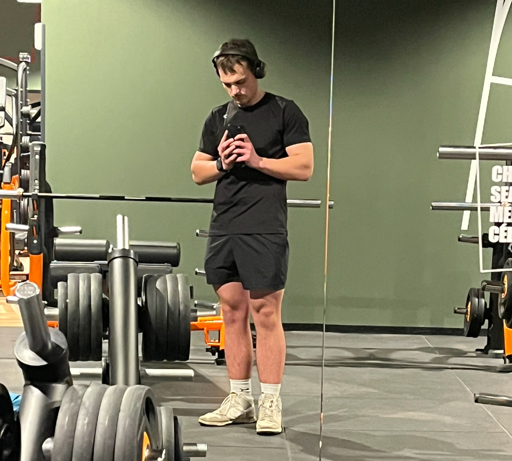
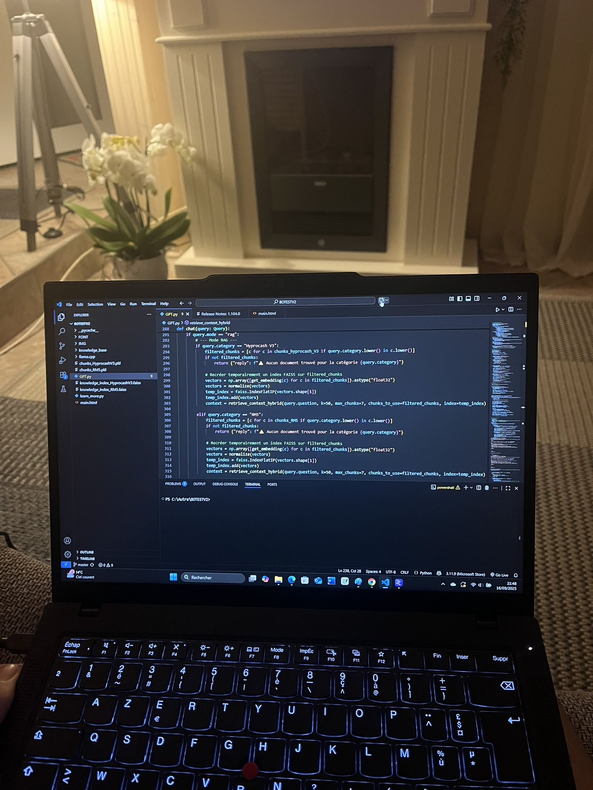

Kontext: Bedarf an Echtzeitvisualisierung des Strom- und Wasserverbrauchs der Anlagen, mit Historie.
Aktionen: Realisierung eines POC unter TIA Portal (Siemens S7-1200 Steuerung / TP900 HMI), Integration des lokalen Speichers und Gestaltung einer ergonomischen, an Bediener angepassten Schnittstelle.
Ergebnisse: Die Anwendung ermöglicht nun die Überwachung des Verbrauchs über einen Zeitraum von zwei Monaten, was Diagnosen und Energieoptimierung erleichtert.
Problem: schnell die Sicherheit einer Website analysieren. Lösung: Erweiterung, die mit 1 Klick bewertet (JavaScript). Ergebnis: Sie erhalten einfach einen Zuverlässigkeitsindex
Web-Erweiterung, die die Sicherheitsanalyse von Websites mit einem Klick vereinfacht.
Echtzeitanalyse der besuchten Websites
Sicherheitsbewertung mit pädagogischen Empfehlungen
Intuitive Benutzeroberfläche mit Pop-up und kreisförmiger Anzeige
Problem: Zugang zu KI in KMUs ist immer noch schwierig und kostspielig. Lösung: Internes Wissen mithilfe eines lokalen Chatbots (Python) kapitalisieren. Ergebnis: Absolute Vertraulichkeit und schneller Zugriff.
Autonomer Chatbot, der Ihre Dateien zur Generierung von Antworten über lokale, 100% private KI verwendet.
pythonHTMLCSSJavaScriptGPT OSS 20B
Sprachkenntnisse
Französisch — Muttersprache
Englisch — Niveau B1
Deutsch — Niveau B2
👨 Über mich
Ich bin leidenschaftlich an Informatik und eingebetteten Systemen interessiert und entwerfe gerne konkrete und effiziente Lösungen, bei denen Innovation auf Einfachheit trifft.
Neugierig und motiviert erkunde ich die Softwareentwicklung und Automatisierung und strebe danach, mit jedem Projekt Fortschritte zu machen. Problemlösung und Optimierung sind der Kern meines Ansatzes.
🔥 Leidenschaften

BodybuildingFormel 1

InformatikWandern
FAQ
Ich entwickle gerne sehr unterschiedliche Projekte. Meine Lieblingssprache bleibt Python, aber ob Low-Level- oder High-Level-Programmierung, was mich motiviert, ist das Gefühl, das mir das Programmieren vermittelt, und der Stolz, wenn das Projekt abgeschlossen ist. Das bringt mich meinen Überzeugungen näher.
Ich benutze regelmäßig Visual Studio Code und Arduino IDE für meine persönlichen Projekte. Im beruflichen Kontext verwende ich auch TIA Portal.
Ich habe in der Schule mit dem Programmieren begonnen und dann im Laufe meines Bachelors einige Sprachen vertieft. Im Großen und Ganzen erfolgte mein Lernen hauptsächlich durch persönliche oder berufliche Projekte, bei denen ich motiviert war, erfolgreich zu sein und direkt in der Praxis zu lernen.
Was mich an der Informatik und den eingebetteten Systemen motiviert, ist das Gefühl des Wohlbefindens, das es mir verschafft. Es erlaubt mir, mich zu konzentrieren, in meine Welt einzutauchen und meinen Geist frei zu machen, um mich voll und ganz dem Projekt zu widmen.
Außerhalb der Arbeit bin ich leidenschaftlich an Sport interessiert, insbesondere am Bodybuilding, inspiriert von Chris Bumstead. Das hat mir Disziplin und Strenge gelehrt, die ich auch in meiner Arbeit anwende. Die Formel 1 fasziniert mich wegen der Technologie und des Vertrauens, das für Höchstleistungen notwendig ist. Das Wandern lehrt mich Ausdauer und die Bedeutung, Ziele zu setzen, was sich in meiner täglichen Arbeitsweise widerspiegelt.
Ich kann sowohl im Team als auch selbstständig arbeiten. Das Team ermöglicht es, die Stärken zu bündeln, aber zu wissen, wie man alleine arbeitet und sich selbst organisiert, ist wesentlich, um effiziente Ergebnisse zu erzielen.
Um neue Sprachen oder Technologien zu lernen, erstelle ich konkrete Projekte und lerne durch Experimentieren. Fehler, auf die ich stoße, sind Gelegenheiten, nachhaltig zu lernen und sie in Zukunft nicht mehr zu wiederholen.
Langfristig möchte ich meine Karriere in der Informatik oder eingebetteten Systemen vertiefen und eventuell F&E oder Freelancing erkunden. Im Moment liegt meine Priorität darauf, mich auf mein Studium zu konzentrieren und Berufserfahrung zu sammeln.
Ich würde eventuell das Abenteuer Freelancing erkunden, wenn sich die Gelegenheit bietet, aber im Moment möchte ich mich auf mein Studium konzentrieren und Erfahrung in einem klassischen beruflichen Umfeld sammeln.
🚀 Bereit zur Zusammenarbeit und um Ihre Projekte zum Leben zu erwecken?
Offen für Projekte, Wissensaustausch oder innovative Ideen, stehe ich zur Verfügung, um jede Gelegenheit zu besprechen und Ihre Ideen in konkrete Lösungen umzuwandeln.